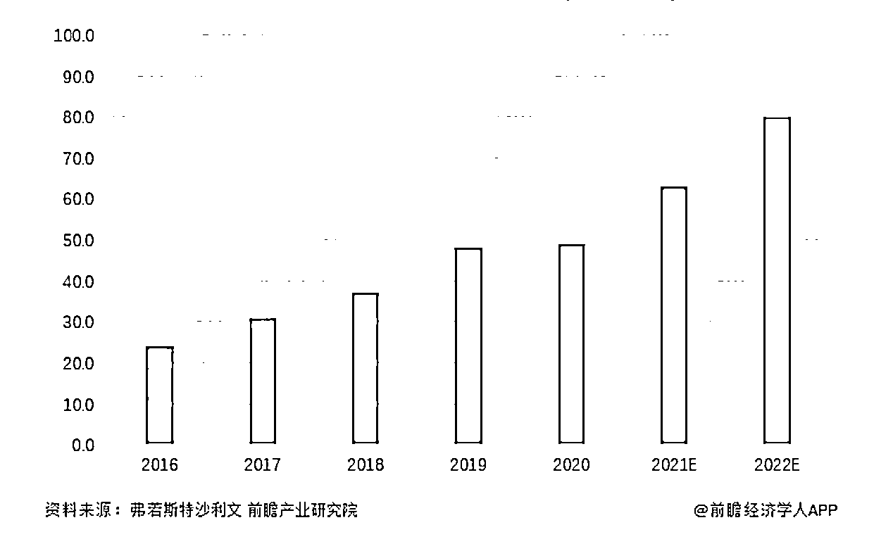
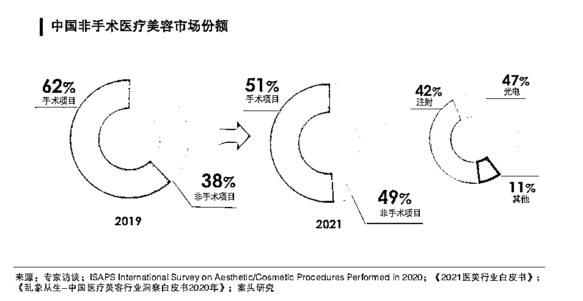
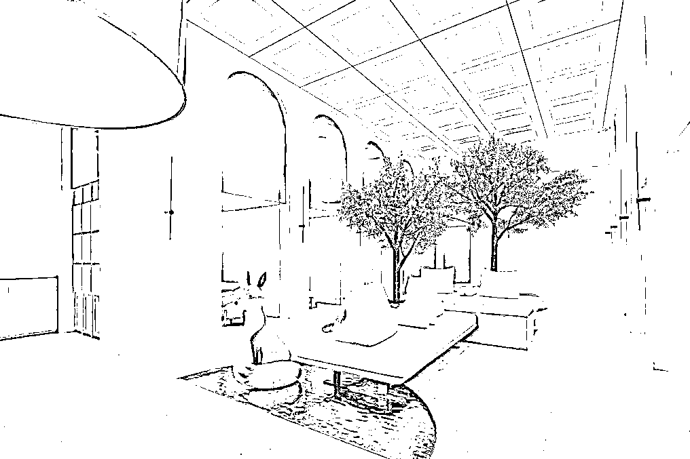
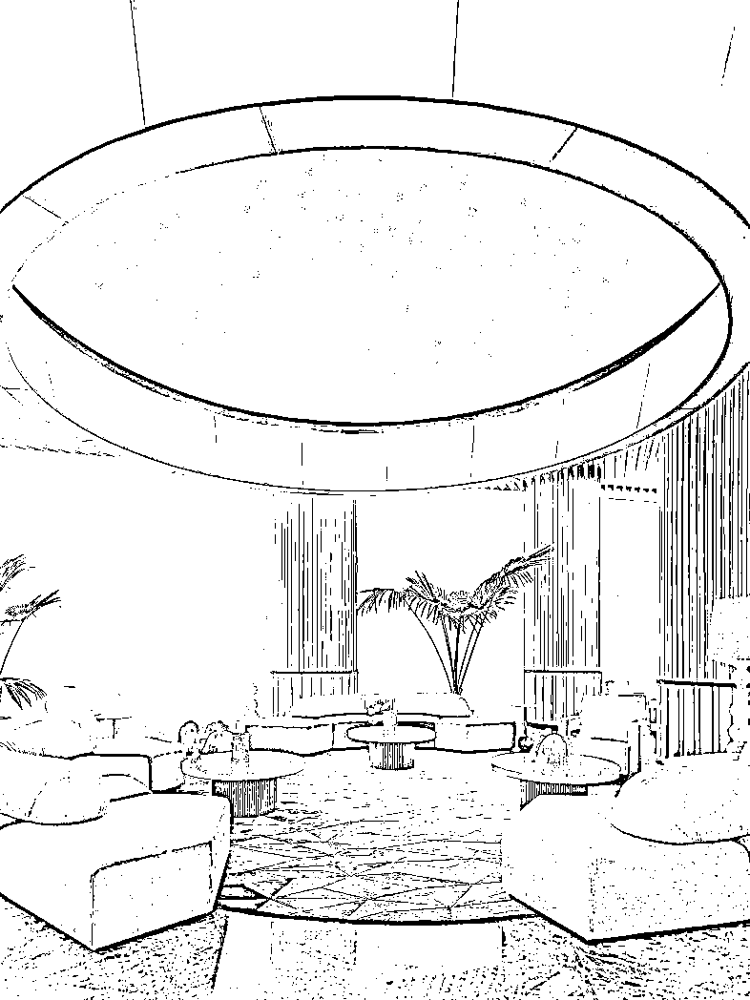
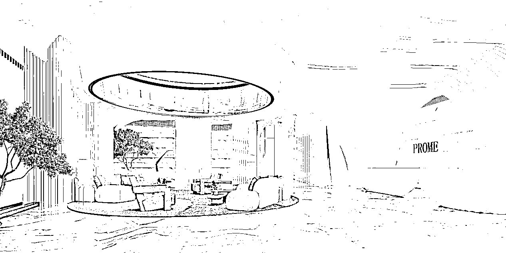

来源：https://r1vlwts9jl4.feishu.cn/docx/VKvJda2Clo3YjrxVmFbc11GtnVh
各位圈友大家好！
我是柒喜，一个在医疗美容行业乘风破浪8年的医美产品品牌方，也是一名轻医美机构运营顾问，有幸被鱼丸老师看见，邀请我给大家聊聊如何从0至1运营一家轻医美机构。由于平时工作比较忙，都是在星球潜水看各位大佬分享，趁此机会抱着一颗利他的心，毫无保留地跟大家唠唠这几年自己的一些行业经验
轻医美这两年被市场炒得热火朝天，一方面大家发现医美这个行业卖的都是非标品，客单价高、利润高、复购高，另一方面也是受不少夸大的言论影响，觉得医美行业能一夜暴富，其实身处其中才知道，这个行业虽然相比很多行业来说确实赚钱不少，但这需要扎实的医疗基础、运营思路和品牌力等，鼓吹造富神话的那波人往往是想割韭菜的人，如果没有行业经验，外人进来有很多坑会踩
2016年投身医美到现在，我也算见证了这个行业从野蛮生长、乱象横生到如今浪潮褪去，制度化、规范化初显端倪，这一路飞速的变化对于上游厂商、医院来说是颠覆式的洗牌，对于消费者而言百利无一害。
第一次发帖，还望各位圈友多多指教，感谢阅读~
全文约6000字，阅读大致需要8分钟
内容包括五个部分：
一、未来五年，布局轻医美机构，还有哪些值得做
二、筹备机构需要准备哪些费用，启动资金要多少？
三、医美机构如何打造有吸引力的空间设计
四、机构开起来了，没有客户怎么办？
五、营业初期，不会选品怎么办？需要把市场上热门的品都采购进院吗？
六、搭建产品链路之前，打造品项差异化能让你少走弯路
七、好的会员制助力留存和增长
轻医美：介于手术整形和生活美容之间的专业医疗美容项目，指用无创或微创美学疗法满足求美诉求，通常指非手术类医美手段
轻医美相比手术类医美，具有低风险、低损伤、恢复期短的特点，操作一个变美项目大概耗时20-50分钟，也被广大求美者亲切地称为“午餐式美容”、“咖啡式美容”，这种低时间成本的变美方式很符合今天快节奏的生活
根据新氧《2021医美行业白皮书》数据，2021年医美项目中，轻医美市场规模占比为49.2%，与手术类项目差距不大。2020年行业规模已经接近50亿元，2022年玻尿酸行业市场规模将接近80亿元，较2021年增长近27%，且这个市场还在不断扩大


随着85后、90后、00后新消费主力军涌入医美市场，这批客户有更高的自主认知，也具备搜索、整理信息的能力，也更看重专业和效果，几年前靠信息差赚钱的医美时代已经一去不复返。加之古早医美求美者因为行业不规范、产品不成熟引起的客诉、整容后遗症等，消费信心不如以前，那些可信度不够，专业度不够、效果不够的机构、平台逐渐被市场淘汰
未来的模式，一定是以建立求美者的信任为重中之重，从信任产品到信任医生，从信任医生到信任机构
除了店铺租金、装修费用、软装要根据实际要求来订，其他硬性支出的费用有：
以上至少需要600-1000w作为启动资金
附一份机构设立基本要求供参考：
开办诊所必须同时满足以下条件：第一，要求个人举办诊所的，须取得执业医师资格，经注册后在医疗卫生机构中从事同一专业的临床工作满5年；两人及以上合伙举办诊所的，所有合伙人均应当符合上述要求；法人或者其他组织举办诊所的，诊所主要负责人应当符合上述要求。第二，符合《诊所基本标准（2022年修订版）》。第三，诊所名称符合《医疗机构管理条例实施细则》等相关规定。第四，能够独立承担民事责任。
其中，医疗美容诊所的基本标准要求如下：
1.床位
至少设有美容治疗床2张，或手术床1张及观察床1张，或口腔综合治疗台1张。
2.科室设置
（1）临床科室：美容外科、美容皮肤科、美容牙科、美容中医科4个诊疗科目中不超过2个诊疗科目。
（2）医技科室：根据开设的诊疗科目，设置相应的医技科室。
1）美容外科：至少设有手术室、治疗室、观察室
2）美容牙科：至少设有诊疗室
3）美容皮肤科：至少设有美容治疗室
4）美容中医科：至少设有中医美容治疗室
3.人员配置
（1）医师
身体健康，能够胜任相关工作；
每一诊疗科目至少有1名按照规定经卫生健康行政部门登记核定的医疗美容主诊医师。
（2）护士
身体健康，能够胜任相关工作；
每一诊疗科目下至少有1名注册护士，注册护士应符合《医疗美容服务管理办法》的相关规定。
4.医疗用房
（1）诊所的使用面积和建筑布局应当满足日常诊疗工作需要，符合医疗机构相关感染防控管理要求；
（2）建筑面积不少于60平方米；
（3）每室必须独立；
（4）手术室净使用面积不得少于15平方米，或每美容治疗床、口腔综合治疗台净使用面积不少于6平方米。
5.设备
（1）基本设备
美容外科：手术床及相应成套美容外科器械、消毒柜、吸引器、无影灯、紫外线消毒灯、电凝器、高压蒸汽灭菌设备
美容皮肤科：皮肤磨削机、离子喷雾器、多功能美容仪、激光机或电子治疗机、超声波、治疗仪、消毒柜、文眉机、高压蒸汽灭菌设备
美容牙科：消毒柜、牙科必备的消毒设备、高压蒸汽灭菌设备
（2）急救设备
氧气瓶（袋）、开口器、牙垫、口腔通气道、人工呼吸器等
（3）有与开展的诊疗科目相应的其他设备。其中，临床检验、医学影像与其他医疗机构签订相关服务协议、由其他机构提供服务的，可不配备相关设备
6.制定各项规章制度，人员岗位责任制；有国家制定或认可的医疗美容技术操作规范、感染管理规范、消毒技术规范，并成册可用
在进入存量时代后，客户净推荐值和客单价相对于转化率更为重要。让消费者在空间内停留时间延长，产生消费，以体验式服务培养客户信任带动零售业态的销售，甚至把这种行为方式衍生到线上零售平台，使原本线下营业时间延长，产生24小时的消费可能性，集合式美学空间应运而生
集合式美学空间在目前的一种体现方式是双美机构，暨生美和医美结合，机构用生美做深客情、增加到店率，用医美拔高客单价、交付更有效的求美结果。更受欢迎的方式是，我来这里做医美的项目，能不能顺带把美甲做了，把化妆品买了，能不能也从你这学到身心灵成长的课程或者提升自我认知，从单纯的服务价值上升到情绪价值、自我实现的价值
那集合式美学空间怎样打造呢？有两个核心思路值得看：
给大家展示一些做得不错的医美机构空间设计



这是很多老板都会面临的最棘手的一个问题，所以我一直都会问想下场的投资人一个问题：你的私域或者圈层有没有100位精准的、愿意为医美付费的粉丝且客单价能在5000以上的？
因为开一家医美机构至少准备好前半年不盈利甚至亏钱的状态，对于新机构来说，有种子客户会容易很多
不管任何行业要进入良性循环就必须拓新、留存一起抓。留存的方法后文会说，先聊聊拓新客有哪些路径
最常用的就是第三方平台引流，比如新氧、美团、大众，在这些平台挂出院内的一些项目达到引流的目的，这是最原始也最有用的方法，弊端就是放在平台上的项目价格低、利润低，新引来的客户很多都是羊毛党，转化难、升单难
另一种方法就是在小红书、抖音、微博找医美类KOL、KOC进行合作，这些博主都有自己的私域粉丝，通过和博主合作开团项目，把粉丝吸引到院
最有效也最难的方法客带客模式，也就是俗称的老客户转介绍，靠的是机构的品质口碑，对院内的医生专业度、销售方式、院内环境、会员激励方法等要求很高。目前我接触的机构里，能够长期存活并保持盈利的大都是这类型机构
不论产品还是仪器设备都太多太多，有些行业新手、生美机构转医美的老板娘，甚至医美运营老手都会犯的错是：没有产品线和产品矩阵思维，只会做单品的叠加堆砌，进一堆货来不知道怎么卖也卖不出去
有针对性的选品是重中之重。坚持每个功能型的产品只选择2-3款，比如皮肤类美白、抗衰、敏感肌、祛痘，每个维度根据自己机构的定位选择2-3个单品就行，其中又可以按高品牌知名度、高功效、高利润来做综合考量。微整注射类按分子量大、中、小选择5款左右玻尿酸就好，再加2款胶原蛋白基本就可以了。这样既不会在货款上压太多资金，也有利规划清晰的产品链路
全民内卷的时代，医疗美容市场也不例外，主要表现在产品同质化、咨询（销售）同质化、价格同质化。如果没有核心竞争力，很容易陷入价格战，很多医美机构老板在创始初期就定下目标要做新模式、拒绝低价等等，初心是好的，但知易行难。医美的浮躁胜过任何一个行业，大部分人只想赚快钱，那如何开发特色项目形成核心竞争力呢？可以围绕这家点来做：
充分发掘医生技术优势，包装标杆项目，“人有我优”是破局
在招聘医生的时候就可以了解医生过往的工作履历、从业经验，侧重外科、无创还是皮肤，擅长解决哪些问题，有没有申请过项目专利等等
有些医生擅长面部外轮廓提升打造、有些医生擅长使用某一光电仪器做面部年轻化治疗，有些能把敏感肌、痘痘肌修复地特别好......举个例子，市面上能做热玛吉（一款经典的抗衰类射频仪器）的机构很多，但不同医院、医生的治疗效果天差地别，因为仪器耗材是否正规、面诊评估是否专业全面、医生操作打法、能量控制选择、术后护理指导等因素，都会对最终的效果产生影响
A家的热玛吉单次卖12800元，B家单次卖9800元，价格没有最低只有更低的情况下，你的机构能不能实现价格突围卖19800元单次，甚至25800？答案是能！
只要在仪器、医生技术、客户服务和客户预期上做打磨、优化，提升治疗效果和客户满意度就行
做细分、精分市场，打造特色项目，“人无我有”是壁垒
这个维度最好还是以医生专业技术为基础来发掘，因为整个交付过程的满意度，效果占比最重，而效果跟医生专业性、审美的高低密不可分
机构在运营项目上可以选择一个细分甚至精分市场作为特色打造，例如可以主打眼部抗衰，眼部衰老的现象有：黑眼圈、泪沟、眼下色沉、上眼睑下垂、眼周细纹、鱼尾纹、太阳穴凹陷......
在所有的衰老迹象里，又能分出预防、美化、纠正、修复这四个不同时期的抗衰老治疗方案，总之围绕眼周会出现的所有衰老情况、时间段去延申并做不同产品的产品联动，可以光电仪器和美塑产品联动，可以美塑产品和微整注射类产品联动，可以注射类和线雕类联动......
只要多角度全方位去思考，太多太多方案可以做，颈部、手部、身体等项目亦如是
满足市场需求，低进高开打造爆款引流项目
医美机构的第一步一定是解决客户从哪里来的问题，把人引进来是第一步，没有人到店，后面的留存、增长都白搭
设置爆款项目就是为了吸引源源不断的新客，这种项目要满足“性价比”，能让消费者尝到甜头的同时价格还不能高，一般定价在300-1000元/次之间，可以用入门级别的光电、维养或者美白效果的水光针来做引流，比如光子嫩肤、英诺小棕瓶、丝丽动能素等
这些品牌知名度高，能自带流量。每一个引流项目出来，都要想好买这个项目的客户到院之后要怎么承接，怎么给她介绍院内的其他品，怎么做转化和留存产生复购，项目之间的效果统一性和升级性就尤为关键
买美白体验的客户要满足的是白这个需求，你给她推抗衰的项目作为转化就不合适，但跟她说要解决变白这个问题，就不能只从白入手，皮肤的问题都不是单一产生的
有些人是因为皮肤红显得不白，有些人是肤色暗显得不白，有些是因为有斑让脸上显得不干净从而不白，每一种情况对应的治疗方案都不一样，要在皮肤每个层次、每个区域使用不同的产品治疗才能达到更满意的效果，也就是中医讲究的治标又至本
用引流项目去新增客户，用转化项目要去筛选和留住客户，用高净值项目去做机构利润，就完成了一家轻医美机构的闭环。
医美会员和其他行业的会员区别在于，医美机构的会员是一半医疗一半消费，一半医美一半互联
受广告法监督，很多内容、产品名、素材案例是不能体现的，由于独特的医疗属性，在宣传方式和宣传平台上也会受限
整个会员制阐述起来是比较庞大的系统，而且同一个方式并不适用所有机构，我今天就从用户沉浸式体验这个点为例，分享几点通用的方法
占据用户心智最好的方法之一就是把某一事件反复植入，在用户从看到医院/项目信息的开端就开始有意识的设立引导加入会员的动作，这个动作贯穿到院前的营销宣传广告、线上客服联系、到院前台接待、咨询师铺垫、医生操作、客服回访、复购的每一环节
分享一个会员旅程的设计方案：（基于有自建会员小程序或企业微信等私域运营工具）
传统营销、第三方平台、自媒体（微博、小红书、视频号等）触达的泛客户群体
↓
线上咨询机构网络客服：报价，发送案例链接或视频介绍，客户看完之后可以获得月度优惠券或首次体验无门槛优惠券
↓
客户到院咨询/复诊客户：在等候期间，前台可以引导参加院内休息区的游戏活动，获得实物礼品、当日优惠券，并引导当日注册会员获得会员积分
↓
现场咨询师接待：完成铺垫、成交项目的目标，并产生裂变。客户添加咨询师微信可以参与小程序客带客活动，赢取季度优惠券、积分和参加抽取当季主推项目免单的机会
↓
医生操作环节：操作项目结束后，医生助理/护士引导客户关注医生的公众号、视频号，获得专属优惠券，定期参与专属限量活动（例如：项目招募、打版、新品抢先试用等）
↓
客服回访：填写医院满意度，获取术后护理指南，定期回访复查，进行项目疗程铺垫。对于未成交的客户可以直接跳转到这一步，让客户持续收到优惠券、活动优惠、回访电话等，也可邀约参加机构沙龙活动。
以上就是关于轻医美机构如何从0-1起盘的价格关键点的分享。最后特别感谢生财提供的分享机会，感谢鱼丸老师的邀请和杨爽老师对文章的建议和打磨，也欢迎想了解或者入局医美行业的圈友来撩，一定知无不言言无不尽，2023一起生财有术！